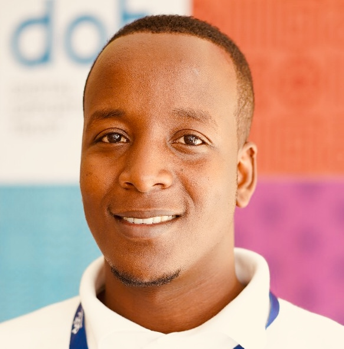

About Me!
Innocent is originally from Africa in a country called Rwanda. When I was young my
dream was to become a businessman so that I can buy a house for my family. I developed the love of
technology when I touched a computer for the first time at the university. I started saving money to buy
myself a laptop. In 2016, I started a project which was teaching young women in Rwanda to learn basic
computer skills and in 2017, coding skills were starting to be introduced in Rwanda and I started a
coding boot camp for young girls to learn coding skills with help from my schoolmate who was in computer
science and project grow up and become huge. After two months of running the program, the USA Embassy
was interested in my project and accepted to give us the grant to recruit more young women. In 2018, I
moved to USA, Columbus, OH. My wish was to dive into tech and I started searching for the boot camps
around in Columbus and I found We Can CODE IT, a five-start coding Bootcamp located in Columbus OH. I
joined the boot camp where I am currently working to complete my full stack developer program.

Contact information
mbandainnocent@gmail.com
6148167227